About
Color utilities for Node.js.
Conversion, modification, and color schemes of: RGB (at any bit depth), HSV, HSL, HSI, HSP, CYMK, YIQ, XYZ, xyY, L*a*b*, L*u*v*, Y'PbPr, Y'CbCr, and more.
View on GitHub View on npmInstallation
npm install --save chromaticity-color-utilities
Usage
Any color can be converted to any other, with only a few caveats. Construction `from()`, conversion `to()`, and modification `modify()` methods can be chained.
Object properties can be accessed directly, e.g. `color.r` for the red channel value.
Most colors will retain their arguments as a part of their object properties, such as bitDepth, colorSpace, etc.
Usage Examples
const Color = require('chromaticity-color-utilities')
let color1 = Color.from('rgb',[255,128,0]).to('hsv')
// hsv { h: 34, s: 100, v: 88, a: 100 }
let color2 = Color.from('hex','ff3201').to('rec709rgb', { bitRate: 10 })
// rec709rgb { r: 940, g: 298, b: 67, a: 940, bitDepth: 10, max: 1023 }
let color6 = Color.from('hex', 'ff00ff').to('lab')
// defaulting to sRGB color space with a D65 standard illuminant reference white
// lab { l: 95, a: 142, b: -88 }
let color6 = Color.from('hex', 'ff00ff').to('lab',{
colorSpace: 'AdobeRGB',
referenceWhite: 'D50'
})
// lab { l: 100, a: 150, b: -49 }
let red = Color.from('hsl',[280,80,90]).to('rgb').r
// 250
let color7 = Color.from('hsl',[300,100,50]).to('ypbpr',{kb:0.0722, kr:0.2126})
// ypbpr { y: 0.2848, pb: 0.3854278939426601, pr: 0.45415290830581667 }
let color3 = Color.from('rgb',[255,0,0]).modify('blend', {with: Color.from('rgb',[0,255,0])})
// rgb { r: 128, g: 128, b: 0, a: 255, bitDepth: 8, max: 255 }
let color4 = Color.from('rgb',[255,0,0]).modify('blend', {
with: Color.from('hex','00ff00'),
amount: 0.4
})
// rgb { r: 153, g: 102, b: 0, a: 255, bitDepth: 8, max: 255 }
let color5 = Color.from('hex','ee5432').modify('blend', {
with: Color.from('rgb',[234, 100, 20, 64]),
amount: 1/3
}).to('hsv')
// hsv { h: 15, s: 83, v: 93, a: 75 }
let scheme1 = Color.from('rgb',[200, 180, 0]).scheme('splitComplement')
// [
// rgb { r: 200, g: 180, b: 0, a: 255, bitDepth: 8, max: 255 },
// rgb { r: 0, g: 120, b: 200, a: 255, bitDepth: 8, max: 255 },
// rgb { r: 80, g: 0, b: 200, a: 255, bitDepth: 8, max: 255 }
// ]
let scheme2 = Color.from('hsl',[180, 80, 48]).scheme('tetradic', { angle: 40 })
// [
// hsl { h: 180, s: 80, l: 48, a: 100 },
// hsl { h: 220, s: 80, l: 48, a: 100 },
// hsl { h: 40, s: 80, l: 48, a: 100 },
// hsl { h: 0, s: 80, l: 48, a: 100 }
// ]Color Types and Conversions
For most of the following examples, the same color is used (magenta / 0xFF00FF).
Alpha is optional when available. If not defined, it will default to the maximum value for the given bit depth. When converting to a space that does not support alpha, it is ignored. If converting back, alpha will be set to full opacity.
RGB: Red, Green Blue
All values are between 0 and `(2 ** bitDepth) - 1`. With a default bit depth of 8, values are within 0-255. A color with a bit depth of 16 will have values ranging from 0-65535.
8-bit color is sometimes referred to as 24-bit or 32-bit (8 bits per channel, with 32-bit including an alpha channel). This package uses the more correct implementation of 32-bit meaning 32 bits per channel, and so generally most use cases would fall between 8 and 16 bit color depth.
Example code:
Color.from('rgb',[r, g, b, a?],{
bitDepth: number // optional, default = 8
})
.to('rgb',{
bitDepth: number, // optional, default = 8
round: boolean // optional, default = true
})
// e.g.
let color1 = Color.from('rgb',[255, 0, 255])
let color3 = color2.to('rgb')
let color4 = Color.from('rgb',[1023, 0, 1023], { bitDepth: 10 })HEX: Hexidecimal
May use string or numerical value. Strings are case-insensitive. Short form or long form may be used. # ignored if present.
Example code:
Color.from('hex',hex)
.to('hex')
// e.g.
let color1 = Color.from('hex', 'ff00ff')
let color1 = Color.from('hex', '#FF00FF')
let color1 = Color.from('hex', 0xFF00FF)
let color3 = color2.to('hex')Rec. 709 RGB: HD Video Standard
Limits RGB color to video levels (16 - 235 for 8-bit or 64 to 940 for 10-bit). Input bit depth must be 8 or 10. RGB values _may fall outside limits_. Alpha channel maintains data levels (0 - 255 / 0 - 1023).
Conversion to Y'PbPr and Y'CbCr will fail as this module does not yet have gamma adjustment implemented. This method does not currently support data levels.
Example code:
Color.from('rec709rgb',[r, g, b, a?], {
round: boolean, // optional, defaults to true
bitDepth: number // optional, defaults to 8, must be 8 or 10
})
.to('rec709rgb', {
round: boolean, // optional, defaults to true
bitDepth: number // optional, defaults to 8, must be 8 or 10
})
// e.g.
let color1 = Color.from('rec709rgb', [235, 16, 235])
let color1 = Color.from('rec709rgb', [940, 64, 940], { bitDepth: 10 })
let color3 = color2.to('rec709rgb')
let color3 = color2.to('rec709rgb', { bitDepth: 10 })Rec. 2020 RGB: UHD Video Standard
Limits RGB color to video levels (64 to 940 for 10-bit or 256 to 3760 for 12-bit). Input bit depth must be 8 or 10. RGB values _may fall outside limits_. Alpha channel maintains data levels (0 - 1023 / 0 - 4096).
Conversion to Y'PbPr and Y'CbCr will fail as this module does not yet have gamma adjustment implemented. This method does not currently support data levels.
Example code:
Color.from('rec2020rgb',[r, g, b, a?], {
round: boolean, // optional, defaults to true
bitDepth: number // optional, defaults to 10, must be 10 or 12
})
.to('rec2020rgb', {
round: boolean, // optional, defaults to true
bitDepth: number // optional, defaults to 10, must be 10 or 12
})
// e.g.
let color1 = Color.from('rec2020rgb', [940, 64, 940])
let color1 = Color.from('rec2020rgb', [3760, 256, 3760], { bitDepth: 12 })
let color3 = color2.to('rec2020rgb')
let color3 = color2.to('rec2020rgb', { bitDepth: 10 })HSV: Hue, Saturation, Value
Hue value is between 0 and 360. Saturation, value, and alpha are between 0 and 100 (as in, percent).
Example code:
Color.from('hsv',[h, s, v, a?])
.to('hsv',{
round: boolean // optional, default = true
})
// e.g.
let color1 = Color.from('hsv',[300, 100, 100])
let color3 = color2.to('hsv')HSL: Hue, Saturation, Lightness
Hue value is between 0 and 360. Saturation, lightness, and alpha are between 0 and 100 (as in, percent).
Example code:
Color.from('hsl',[h, s, l, a?])
.to('hsl',{
round: boolean // optional, default = true
})
// e.g.
let color1 = Color.from('hsl',[300, 100, 50])
let color3 = color2.to('hsl')HSI: Hue, Saturation, Intensity
Hue value is between 0 and 360. Saturation, intensity, and alpha are between 0 and 100 (as in, percent).
Example code:
Color.from('hsi',[h, s, v, a?])
.to('hsi',{
round: boolean // optional, default = true
})
// e.g.
let color1 = Color.from('hsi',[300, 100, 67])
let color3 = color2.to('hsi')HSP: Hue, Saturation, Perceived Brightness
Hue value is between 0 and 360. Saturation, perceived brightness, and alpha are between 0 and 100 (as in, percent).
The formula used to generate HSP is similar to the one Photoshop uses when converting images to greyscale.
When passing PR and PB values, PR + PG + PB must = 1.
By default,
- PR = 0.299
- PG = 0.587
- PB = 0.114
Example code:
Color.from('hsp',[h, s, p, a?],{
pb: number, // optional, default = 0.114
pr: number // optional, default = 0.299
})
.to('hsp',{
round: boolean, // optional, default = true
pb: number, // optional, default = 0.114
pr: number // optional, default = 0.299
})
// e.g.
let color1 = Color.from('hsp',[300, 100, 65]).to('rgb')
// rgb { r: 255, g: 0, b: 255, a: 255, bitDepth: 8, max: 255 }
let color3 = Color.from('rgb',[255, 0, 255]).to('hsp')
// hsp { h: 300, s: 100, p: 64, a: 100, pr: 0.299, pg: 0.587, pb: 0.114 }CMYK: Cyan, Magenta, Yellow, Black
All values are between 0 and 100 (as in, percent).
The formula used to generate HSP is similar to the one Photoshop uses when converting images to greyscale.
Calculations do not take pigment conversion into account and should not be used to reference printed colors.
Example code:
Color.from('cmyk',[c, m, y, k])
.to('cmyk',{
round: boolean // optional, default = true
})
// e.g.
let color1 = Color.from('cmyk',[0, 100, 0, 0])
let color3 = color2.to('cmyk')YIQ: NTSC Color
- Y = luma
- I = in-phase
- Q = quadrature
When normalized:
- Y is between 0 and 255
- I and Q are between -128 and 128
When not normalized:
- Y is between 0 and 1
- I is between -0.5957 and 0.5957
- Q is between -0.5226 and 0.5226
Example code:
Color.from('yiq', [y, i, q], {
normalized: boolean // optional, default = true
})
.to('yiq',{
normalize: boolean, // optional, default = true
round: boolean // optional, default = true (ignored/false if not normalized)
})
// e.g.
let color1 = Color.from('yiq',[105, 59, 128])
let color3 = color2.to('yiq')
let color4 = Color.from('yiq', [0.413, 0.2746, 0.5226], {normalized: false})XYQ: CIE XYZ
All values are between 0 and 1.
- X = mix of three CIE RGB curves chosen to be non-negative
- Y = luminance
- Z = quasi-equal to blue
It is not often useful to convert _to_ XYZ, as XYZ defines real-world light and is typically then converted to a digital representation (most commonly RGB), but the functionality is present nonetheless.
When converting to most color types, you must supply color space and standard illuminant reference white. Available Color Spaces and Stardard Illuminants listed below.
Example code:
Color.from('xyz', [x, y, z])
.to('xyz',{
colorSpace: string, // optional, default = 'srgb' -- ignored if converting from xyy, lab, luv
referenceWhite: string // optional, default = 'd65' -- ignored if converting from xyy
})
// e.g.
let color1 = Color.from('xyz',[0.5928939, 0.2848479, 0.969638])
let color3 = color2.to('xyz')
let color4 = color1.to('rgb')
let color5 = color1.to('rgb', {
colorSpace: 'adobergb',
referenceWhite: 'd50'
})xyY: CIE xyY
Derived from XYZ, x and y are chromaticity values while Y is the tristimulous value of a color.
When converting to most color types, you must supply color space and standard illuminant reference white. Available Color Spaces and Stardard Illuminants listed below.
Example code:
Color.from('xyy', [x, y, Y])
.to('xyy',{
colorSpace: string, // optional, defaults to 'srgb' -- ignored if converting from xyz
referenceWhite: string // optional, defaults to 'd65'
})
// e.g.
let color1 = Color.from('xyy',[0.3209377411185291, 0.1541902211986945, 0.2848479])
let color3 = color2.to('xyy')Lab: CIE L*a*b*
- L* = lightness/luma
- a* = position between red and green, where negative indicates green and positive red
- b* = position between blue and yellow, where negative indicated blue and positive yellow
When converting to most color types, you must supply color space and standard illuminant reference white. Available Color Spaces and Stardard Illuminants listed below.
Example code:
Color.from('lab', [l, a, b])
.to('lab',{
colorSpace: string, // optional, defaults to 'srgb' -- ignored if converting from xyz, luv
referenceWhite: string, // optional, defaults to 'd65'
round: boolean // optional, defaults to true
})
// e.g.
let color1 = Color.from('lab',[95, 142, -88])
let color3 = color2.to('lab')
let color4 = color1.to('rgb')
let color5 = color1.to('rgb', {
colorSpace: 'adobergb',
referenceWhite: 'd50'
})Luv: CIE L*u*v*
Derived from XYZ. L*, luma, is identical to L* in L*a*b*
When converting to most color types, you must supply color space and standard illuminant reference white. Available Color Spaces and Stardard Illuminants listed below.
Example code:
Color.from('luv', [l, u, v])
.to('luv',{
colorSpace: string, // optional, default = 'srgb' -- ignored if converting from xyz, lab
referenceWhite: string, // optional, default = 'd65'
round: boolean // optional, defaults to true
})
// e.g.
let color1 = Color.from('luv',[95, 132, -170])
let color3 = color2.to('luv')
let color4 = color1.to('rgb')
let color5 = color1.to('rgb', {
colorSpace: 'adobergb',
referenceWhite: 'd50'
})YPbPr: Analog Video Component Signals
Also written Y'PbPr or YPBPR.
- Y' = luma and sync (brightness/luminance and syncrhonization)
- Pb = difference between blue and luma (B - Y)
- Pr = difference between red and luma (R - Y)
Kb and Kr are constants defined from target color space, such that Kb + Kr + Kg = 1. Kb and Kr constants are not yet included in this module.
Example code:
Color.from('ypbpr', [y, pb, pr], {
kb: number, // REQUIRED
kr: number // REQUIRED
})
.to('ypbpr',{
kb: number, // REQUIRED
kr: number // REQUIRED
})
// YCbCr conversion
.to('ycbcr',{
yLower: number, // optional, default = 16, lower bounds of Y'
yUpper: number, // optional, default = 235, upper bounds of Y'
cLower: number, // optional, default = 16, lower bounds of Cb and Cr
cUpper: number // optional, default = 240, upper bounds of Cb and Cr
})
// e.g.
let color1 = Color.from('ypbpr',[
0.2848,
0.3854278939426601,
0.45415290830581667
])
let color3 = color2.to('ypbpr',{
kb: 0.0722, // Rec709
kr: 0.2126 // Rec709
})
let color4 = color1.to('ycbcr')
let color5 = color1.to('ycbcr',{
yLower: 0,
yUpper: 255,
cLower: 0,
cUpper: 255
})YCbCr: Digital Video Component Signals
Also written Y'CbCr, Y Pb/Cb Pr/Cr, YCBCR, or Y'CBCR.
- Y' = luma and sync (brightness/luminance and syncrhonization)
- Cb = difference between blue and luma (B - Y)
- Cr = difference between red and luma (R - Y)
YCbCr conversions require Kb and Kr input arguments with the exception of converting to YPbPr. Kb and Kr are constants defined from target color space, such that Kb + Kr + Kg = 1. Kb and Kr constants are not yet included in this module.
Upper and lower bounds vary with color space.
Example code:
Color.from('ycbcr', [y, cb, cr], {
yLower: number, // optional, default = 16, lower bounds of Y'
yUpper: number, // optional, default = 235, upper bounds of Y'
cLower: number, // optional, default = 16, lower bounds of Cb and Cr
cUpper: number // optional, default = 240, upper bounds of Cb and Cr
)
.to('ycbcr',{
kb: number, // REQUIRED
kr: number // REQUIRED
})
// YPbPr conversion
.to('ypbpr',{
yLower: number, // optional, default = 16, lower bounds of Y'
yUpper: number, // optional, default = 235, upper bounds of Y'
cLower: number, // optional, default = 16, lower bounds of Cb and Cr
cUpper: number // optional, default = 240, upper bounds of Cb and Cr
})
// e.g.
let color1 = Color.from('ycbcr', [73, 226, 243])
let color3 = color2.to('ycbcr',{
kb: 0.0722, // Rec709
kr: 0.2126 // Rec709
})
let color4 = color1.to('ypbpr')
let color5 = color1.to('ypbpr',{
yLower: 0,
yUpper: 255,
cLower: 0,
cUpper: 255
})NM: Wavelengths of Light
This is a one-way approximation and is hugely perceptual. There is no `.to('nm')` method option.
Example code:
Color.from('nm', wavelength)
// e.g.
let color1 = Color.from('nm',600).to('rgb')
// rgb { r: 255, g: 190, b: 0, a: 255, bitDepth: 8, max: 255 }Kelvin: Color Temperature Approximation
This is a one-way approximation. There is no `.to('kelvin')` method option. This method uses trapezoid integration to sum the wavelength distribution of energy through a black body tensor. While an approximation, it is a rather accurate one. Temperatures above 10k°K may be less accurate, but the method allows for temperatures up to 40k°K.
Example code:
Color.from('kelvin', degrees)
// e.g.
let color1 = Color.from('kelvin',1000).to('rgb')
// rgb { r: 255, g: 13, b: 0, a: 255, bitDepth: 8, max: 255 }
let color1 = Color.from('kelvin',2000).to('rgb')
// rgb { r: 255, g: 169, b: 7, a: 255, bitDepth: 8, max: 255 }
let color1 = Color.from('kelvin',4000).to('rgb')
// rgb { r: 240, g: 255, b: 174, a: 255, bitDepth: 8, max: 255 }
let color1 = Color.from('kelvin',8000).to('rgb')
// rgb { r: 143, g: 232, b: 255, a: 255, bitDepth: 8, max: 255 }
let color1 = Color.from('kelvin',10000).to('rgb')
// rgb { r: 121, g: 210, b: 255, a: 255, bitDepth: 8, max: 255 }Color Spaces and Standard Illuminants
For conversion to and from XYZ, xyY, L*a*b*, and L*u*v*, the following color spaces and standard illuminants have XYZ transformation matrices and reference white point vectors available:
| Color Space | Standard Illuminants |
|---|---|
| sRGB | D65, D50 |
| CIE RGB | E, D50 |
| Adobe RGB | D65, D50 |
| Apple RGB | D65, D50 |
| Best RGB | D50 |
| Bruce RGB | D65, D50 |
| ColorMatch RGB | D50 |
| Don RGB 4 | D50 |
| ECI RGB v2 | D50 |
| Ekta Space PS5 | D50 |
| NTSC RGB | C, D50 |
| PAL / SECAM RGB | D65, D50 |
| ProPhoto RGB | D50 |
| SMPTE-C RGB | D65, D50 |
| Wide Gamut RGB | D50 |
Color spaces and standard illuminant arguments are case-insensitive Color space argument ignores any character not alphanumeric. Some common misspellings / words left out are also taken into account. (`PAL / SECAM` is equivalent to `palsecamrgb`.)
Modifying Colors
Blending Colors
When blending two colors, the amount ∈ [0,1] refers to the percentage the second color is blended with the first. In other words, 0 means 0% of the second color and 100% of the first while 1 means 100% of the second color and 0% of the first.
Blending methods include: `rgb`, `hsv`
Example code:
let color3 = color1.modify('blend', {
with: color2, // REQUIRED, can be any color of any type
amount: number, // optional, 0 - 1, defaults to 0.5
method: string, // optional, defaults to 'rgb'
round: boolean // optional, defaults to true
})
// e.g.
let color4 = Color.from('rgb',[255,0,0]).modify('blend', {
with: Color.from('hex','00ff00')
})
// rgb { r: 128, g: 128, b: 0, a: 255, bitDepth: 8, max: 255 }
let color4 = Color.from('rgb',[255,0,0]).modify('blend', {
with: Color.from('hex','00ff00'),
method: 'hsv'
})
// rgb { r: 255, g: 255, b: 0, a: 255, bitDepth: 8, max: 255 }
let color5 = Color.from('hex','ee5432').modify('blend', {
with: Color.from('rgb',[234, 100, 20, 64]),
amount: 1/3
}).to('hsv')
// hsv { h: 15, s: 83, v: 93, a: 75 }Darken
These methods are intended to provide alternative ways of modifying a color versus changing the values directly, which can make more sense.
Methods include: `hsl`/`lightness`, `hsp`/`perceived`
Example code:
let color2 = color1.modify('darken', {
amount: number, // optional, 0 - 1, defaults to 0.5
method: string, // optional, defaults to 'lightness'
round: boolean // optional, defaults to true
})
// e.g.
let color2 = Color.from('rgb',[255,0,255,200]).modify('darken',{method:'lightness'})
// rgb { r: 128, g: 0, b: 128, a: 200, bitDepth: 8, max: 255 }
let color2 = Color.from('rgb',[100,0,100]).modify('darken',{method:'hsp'})
// rgb { r: 52, g: 0, b: 52, a: 255, bitDepth: 8, max: 255 }Lighten
These methods are intended to provide alternative ways of modifying a color versus changing the values directly, which can make more sense.
Methods include: `hsl`/`lightness`, `hsp`/`perceived`
Example code:
let color2 = color1.modify('lighten', {
amount: number, // optional, 0 - 1, defaults to 0.5
method: string, // optional, defaults to 'lightness'
round: boolean // optional, defaults to true
})
// e.g.
let color2 = Color.from('rgb',[255,0,255,200]).modify('lighten',{method:'lightness'})
// rgb { r: 255, g: 128, b: 255, a: 200, bitDepth: 8, max: 255 }
let color2 = Color.from('rgb',[100,0,100]).modify('lighten',{method:'hsp'})
// rgb { r: 250, g: 0, b: 250, a: 255, bitDepth: 8, max: 255 }Saturate
These methods are intended to provide alternative ways of modifying a color versus changing the values directly, which can make more sense.
Methods available are: `hsv`, `hsl`. The input color type does not matter.
Example code:
let color2 = color1.modify('saturate', {
amount: number, // optional, 0 - 1, defaults to 0.5
method: string, // optional, defaults to 'hsl'
round: boolean // optional, defaults to true
})
// e.g.
let color2 = Color.from('rgb',[128,64,128,200]).modify('saturate','hsl')
// rgb { r: 160, g: 32, b: 160, a: 200, bitDepth: 8, max: 255 }
let color2 = Color.from('rgb',[128,64,128,200]).modify('saturate','hsv')
// rgb { r: 128, g: 32, b: 128, a: 200, bitDepth: 8, max: 255 }Desaturate
These methods are intended to provide alternative ways of modifying a color versus changing the values directly, which can make more sense.
Methods available are: `hsv`, `hsl`. The input color type does not matter.
Example code:
let color2 = color1.modify('saturate', {
amount: number, // optional, 0 - 1, defaults to 0.5
method: string, // optional, defaults to 'hsl'
round: boolean // optional, defaults to true
})
// e.g.
let color2 = Color.from('rgb',[255,0,255,200]).modify('desaturate','hsl')
// rgb { r: 191, g: 64, b: 191, a: 200, bitDepth: 8, max: 255 }
let color2 = Color.from('rgb',[255,0,255,200]).modify('desaturate','hsl')
// rgb { r: 255, g: 128, b: 255, a: 200, bitDepth: 8, max: 255 }Color Scheme Generation
Schemes can be generated from any color type. All methods return an array of colors, each the same as the input type. (If calling method on a color of type `hsl`, all elements of the returned array will be of type `hsl`.)
Example code:
.scheme(type: string, args?: {})Complementary Schemes
Complementary color scheme generation has a fixed angle of 180°.
Example code:
.scheme('complement', { // angle = 180
round: boolean // optional, defaults to true
})
// e.g.
let color1 = Color.from('rgb',[255,0,255]).scheme('complement')
// [
// rgb { r: 255, g: 0, b: 255, a: 255, bitDepth: 8, max: 255 },
// rgb { r: 0, g: 255, b: 0, a: 255, bitDepth: 8, max: 255 }
// ]Analogous, Triadic, & Split Complement Schemes
These three methods are synonyms with different default angles.
Example code:
.scheme('analogous', {
angle: number, // optional, default = 30
round: boolean // optional, defaults to true
})
.scheme('triadic', {
angle: number, // optional, default = 120
round: boolean // optional, defaults to true
})
.scheme('splitcomplement', {
angle: number, // optional, default = 150
round: boolean // optional, defaults to true
})
// e.g.
let color1 = Color.from('rgb',[255,0,255]).scheme('analogous')
// [
// rgb { r: 255, g: 0, b: 255, a: 255, bitDepth: 8, max: 255 },
// rgb { r: 128, g: 255, b: 0, a: 255, bitDepth: 8, max: 255 },
// rgb { r: 0, g: 255, b: 128, a: 255, bitDepth: 8, max: 255 }
// ]
let color2 = Color.from('rgb',[255,0,255]).scheme('triadic')
// [
// rgb { r: 255, g: 0, b: 255, a: 255, bitDepth: 8, max: 255 },
// rgb { r: 255, g: 255, b: 0, a: 255, bitDepth: 8, max: 255 },
// rgb { r: 0, g: 255, b: 255, a: 255, bitDepth: 8, max: 255 }
// ]
let color3 = Color.from('rgb',[255,0,255]).scheme('splitcomplement',{angle: 160})
// [
// rgb { r: 255, g: 0, b: 255, a: 255, bitDepth: 8, max: 255 },
// rgb { r: 85, g: 255, b: 0, a: 255, bitDepth: 8, max: 255 },
// rgb { r: 0, g: 255, b: 85, a: 255, bitDepth: 8, max: 255 }
// ]Tetradic & Square Schemes
These two methods are synonyms, but that the square method has a fixed angle of 90°.
Example code:
.scheme('tetradic', {
angle: number, // optional, default = 45
round: boolean // optional, defaults to true
})
.scheme('square', {
round: boolean // optional, defaults to true
}) // angle = 90
// e.g.
let color1 = Color.from('rgb',[255,0,255]).scheme('tetradic',{angle: 42})
// [
// rgb { r: 255, g: 0, b: 255, a: 255, bitDepth: 8, max: 255 },
// rgb { r: 255, g: 0, b: 76, a: 255, bitDepth: 8, max: 255 },
// rgb { r: 0, g: 255, b: 179, a: 255, bitDepth: 8, max: 255 },
// rgb { r: 0, g: 255, b: 0, a: 255, bitDepth: 8, max: 255 }
// ]
let color2 = Color.from('rgb',[255,0,255]).scheme('square')
// [
// rgb { r: 255, g: 0, b: 255, a: 255, bitDepth: 8, max: 255 },
// rgb { r: 255, g: 128, b: 0, a: 255, bitDepth: 8, max: 255 },
// rgb { r: 0, g: 128, b: 255, a: 255, bitDepth: 8, max: 255 },
// rgb { r: 0, g: 255, b: 0, a: 255, bitDepth: 8, max: 255 }
// ]Tint Scales
This method generates an array of tints of the input color.
Example code:
.scheme('tint',{
colors: number, // REQUIRED, number of colors in scheme
distance: number, // optional, 0-1, defaults to 1, how close to white scheme should reach
round: boolean // optional, defaults to true
})
// e.g.
let tintScheme1 = Color.from('rgb',[100,0,100]).scheme('tint', {colors: 4})
// [
// rgb { r: 100, g: 0, b: 100, a: 255, bitDepth: 8, max: 255 },
// rgb { r: 237, g: 0, b: 237, a: 255, bitDepth: 8, max: 255 },
// rgb { r: 255, g: 118, b: 255, a: 255, bitDepth: 8, max: 255 },
// rgb { r: 255, g: 255, b: 255, a: 255, bitDepth: 8, max: 255 }
// ]
let tintScheme2 = Color.from('rgb',[100,0,100]).scheme('tint', {colors: 4, distance: 0.5})
// [
// rgb { r: 100, g: 0, b: 100, a: 255, bitDepth: 8, max: 255 },
// rgb { r: 168, g: 0, b: 168, a: 255, bitDepth: 8, max: 255 },
// rgb { r: 237, g: 0, b: 237, a: 255, bitDepth: 8, max: 255 },
// rgb { r: 255, g: 50, b: 255, a: 255, bitDepth: 8, max: 255 }
// ]Shade Scales
This method generates an array of shades of the input color.
Example code:
.scheme('shade',{
length: number, // REQUIRED, number of colors in scheme
distance: number, // optional, 0-1, defaults to 1, how close to black scheme should reach
round: boolean // optional, defaults to true
})
// e.g.
let shadeScheme1 = Color.from('rgb',[255,0,255]).scheme('shade', {colors: 4})
// [
// rgb { r: 255, g: 0, b: 255, a: 255, bitDepth: 8, max: 255 },
// rgb { r: 170, g: 0, b: 170, a: 255, bitDepth: 8, max: 255 },
// rgb { r: 85, g: 0, b: 85, a: 255, bitDepth: 8, max: 255 },
// rgb { r: 0, g: 0, b: 0, a: 255, bitDepth: 8, max: 255 }
// ]
let shadeScheme2 = Color.from('rgb',[255,0,255]).scheme('shade', {colors: 4, distance: 0.5})
// [
// rgb { r: 255, g: 0, b: 255, a: 255, bitDepth: 8, max: 255 },
// rgb { r: 212, g: 0, b: 212, a: 255, bitDepth: 8, max: 255 },
// rgb { r: 170, g: 0, b: 170, a: 255, bitDepth: 8, max: 255 },
// rgb { r: 128, g: 0, b: 128, a: 255, bitDepth: 8, max: 255 }
// ]Tint & Shade Scales
This method generates an array of tints and shades of the input color.
The total number of colors in the scheme will be `colors * 2 + 1`, including the original color.
If including distance arguments, either include `distance` OR `distanceToWhite` and `distanceToBlack`. If you only include distance it will calculate distance to the nearest bound (black or white) and use that as measure for the other direction.
Example code:
.scheme('tintshade',{
colors: number, // REQUIRED, number of colors in each direction from source color
distance: number, // optional, 0-1, defaults to 1 OR
distanceToWhite: number, // optional, 0-1, defaults to 1
distanceToBlack: number, // optional, 0-1, defaults to 1
round: boolean // optional, defaults to true
})
// e.g.
let scheme1 = Color.from('rgb',[100,0,100]).scheme('tintshade', {colors: 3})
// [
// rgb { r: 0, g: 0, b: 0, a: 255, bitDepth: 8, max: 255 },
// rgb { r: 33, g: 0, b: 33, a: 255, bitDepth: 8, max: 255 },
// rgb { r: 67, g: 0, b: 67, a: 255, bitDepth: 8, max: 255 },
// rgb { r: 100, g: 0, b: 100, a: 255, bitDepth: 8, max: 255 },
// rgb { r: 133, g: 0, b: 133, a: 255, bitDepth: 8, max: 255 },
// rgb { r: 167, g: 0, b: 167, a: 255, bitDepth: 8, max: 255 },
// rgb { r: 200, g: 0, b: 200, a: 255, bitDepth: 8, max: 255 }
// ]
let scheme2 = Color.from('rgb',[200,100,200]).scheme('tintshade', {colors: 3})
// [
// rgb { r: 66, g: 24, b: 66, a: 255, bitDepth: 8, max: 255 },
// rgb { r: 118, g: 42, b: 118, a: 255, bitDepth: 8, max: 255 },
// rgb { r: 170, g: 60, b: 170, a: 255, bitDepth: 8, max: 255 },
// rgb { r: 200, g: 100, b: 200, a: 255, bitDepth: 8, max: 255 },
// rgb { r: 218, g: 152, b: 218, a: 255, bitDepth: 8, max: 255 },
// rgb { r: 237, g: 203, b: 237, a: 255, bitDepth: 8, max: 255 },
// rgb { r: 255, g: 255, b: 255, a: 255, bitDepth: 8, max: 255 }
// ]
let scheme4 = Color.from('rgb',[200,100,200]).scheme('tintshade', {colors: 3, distance: 0.5})
// [
// rgb { r: 144, g: 51, b: 144, a: 255, bitDepth: 8, max: 255 },
// rgb { r: 170, g: 60, b: 170, a: 255, bitDepth: 8, max: 255 },
// rgb { r: 191, g: 74, b: 191, a: 255, bitDepth: 8, max: 255 },
// rgb { r: 200, g: 100, b: 200, a: 255, bitDepth: 8, max: 255 },
// rgb { r: 209, g: 126, b: 209, a: 255, bitDepth: 8, max: 255 },
// rgb { r: 218, g: 152, b: 218, a: 255, bitDepth: 8, max: 255 },
// rgb { r: 227, g: 178, b: 227, a: 255, bitDepth: 8, max: 255 }
// ]
let scheme5 = Color.from('rgb',[200,100,200]).scheme('tintshade', {
colors: 3,
distanceToWhite: 1,
distanceToBlack: 1
})
// [
// rgb { r: 0, g: 0, b: 0, a: 255, bitDepth: 8, max: 255 },
// rgb { r: 74, g: 26, b: 74, a: 255, bitDepth: 8, max: 255 },
// rgb { r: 148, g: 52, b: 148, a: 255, bitDepth: 8, max: 255 },
// rgb { r: 200, g: 100, b: 200, a: 255, bitDepth: 8, max: 255 },
// rgb { r: 218, g: 152, b: 218, a: 255, bitDepth: 8, max: 255 },
// rgb { r: 237, g: 203, b: 237, a: 255, bitDepth: 8, max: 255 },
// rgb { r: 255, g: 255, b: 255, a: 255, bitDepth: 8, max: 255 }
// ]Gradient Scales
Generate an array of colors from color1 to color2. Methods available are `rgb` and `hsv`.
Example code:
.scheme('gradient',{
color2: colorType, // REQUIRED, second color, of any type, to blend with
colors: number, // REQUIRED, number of colors to be returned, must be > 2
method: string, // optional, defaults to 'rgb'
round: boolean // optional, defaults to true
})
// e.g.
let gradient1 = Color.from('rgb',[255,0,255]).scheme('gradient',{
with: Color.from('hex',0x00FF00),
colors: 5
})
// [
// rgb { r: 255, g: 0, b: 255, a: 255, bitDepth: 8, max: 255 },
// rgb { r: 191, g: 64, b: 191, a: 255, bitDepth: 8, max: 255 },
// rgb { r: 128, g: 128, b: 128, a: 255, bitDepth: 8, max: 255 },
// rgb { r: 64, g: 191, b: 64, a: 255, bitDepth: 8, max: 255 },
// rgb { r: 0, g: 255, b: 0, a: 255, bitDepth: 8, max: 255 }
// ]
let gradient1 = Color.from('rgb',[255,0,255]).scheme('gradient',{
with: Color.from('hex','00ff00'),
colors: 5,
method: 'hsv'
})
// [
// rgb { r: 255, g: 0, b: 255, a: 255, bitDepth: 8, max: 255 },
// rgb { r: 64, g: 0, b: 255, a: 255, bitDepth: 8, max: 255 },
// rgb { r: 0, g: 128, b: 255, a: 255, bitDepth: 8, max: 255 },
// rgb { r: 0, g: 255, b: 191, a: 255, bitDepth: 8, max: 255 },
// rgb { r: 0, g: 255, b: 0, a: 255, bitDepth: 8, max: 255 }
// ]Mathematics
The following are the formulae used in the conversion algorithms. For succinctness, consider all values normalized ∈ [0, 1] unless stated otherwise.
Normalizing RGB
To achieve R,G,B ∈ [0, 1]:
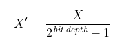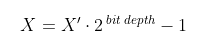
RGB to HSV
C references chroma.
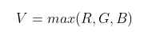


HSV to RGB
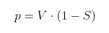
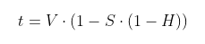

RGB to HSL
C references chroma.


HSL to RGB
C references chroma.
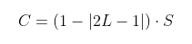

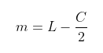

RGB to HSI
C references chroma.

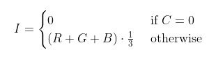
HSI to RGB
C references chroma.


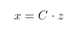

RGB to HSP
Where P is perceived brightness. This algorithm is similar to the one Photoshop uses when converting images to greyscale.
If no values are passed, the default weight for P is as follows:

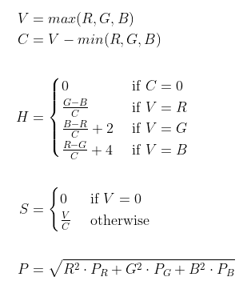
HSP to RGB
Where P is perceived brightness. This algorithm is similar to the one Photoshop uses when converting images to greyscale.
If no values are passed, the default weight for P is as follows:


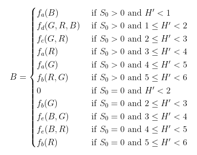
HSV to HSL
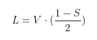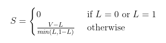
HSL to HSV

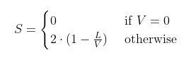
RGB to CMYK
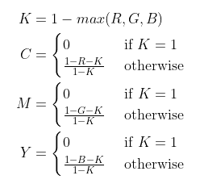CMYK to RGB
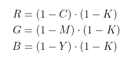RGB to YIQ


YIQ to RGB
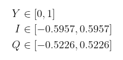
RGB to XYZ
M = 3x3 RGB to XYZ transformation matrix based on color space and standard illuminant reference white. This transformation matrix is an inverse of the XYZ to RGB transformation matrix.
sRGB

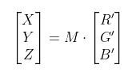
L*
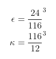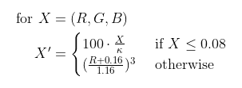
Other color spaces
gamma (γ) based on target color space
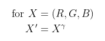XYZ to RGB
M = 3x3 RGB to XYZ transformation matrix based on color space and standard illuminant reference white.
sRGB
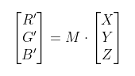
L*

Other color spaces
gamma (γ) based on target color space
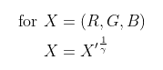
XYZ to xyY
If X = Y = Z = 0, x and y are set to the chromaticity coordinates of the reference white.
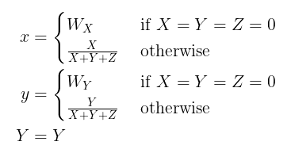xyY to XYZ

XYZ to L*a*b*
W is a 1x3 reference white vector based on standard illuminant.

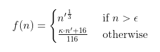

L* = min(max(L*,0)1)
L*a*b* to XYZ
W is a 1x3 reference white vector based on standard illuminant.


XYZ to L*u*v*
W is a 1x3 reference white vector based on standard illuminant.
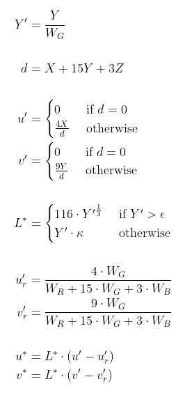
L* = min(max(L*,0)1)
L*u*v* to XYZ
W is a 1x3 reference white vector based on standard illuminant.
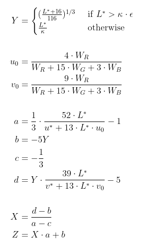
RGB to YPbPr
Kb and Kr constants defined from target color space.

YPbPr to RGB
Kb and Kr constants defined from target color space.
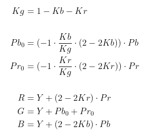YPbPr to YCbCr
Scaling bounds given by conversion method / target space. Typical bounds might be 0-255 for all values for JPEG target or 16-235 for Y and 16-245 for Cb and Cr for Rec. 709 target.
YCbCr to YPbPr
Y is scaled to 0-1, Cb and Cr are scaled such that Pb and Pr are between -0.5 and 0.5.
Temperature (Kelvin) to RGB
Where v is a tensor of XYZ color matching vectors for wavelengths in 5nm increments from 380nm to 780nm and T is the given temperature in Kelvin. Trapezoid integration is used to sum the XYZ values from a black body spectrum generated from the tensor v based on temperature. [9]
In other words, a black body emission spectrum is generated for a given temperature, from which a summation of each XYZ set of values in the spectrum, normalized, gives an average XYZ, the mish-mash of wavelengths that we perceive as a single color. Then that XYZ color is simply converted to RGB.
I'm not 100% positive on my notation—f(vki) is a function of each index of each vector in the tensor v.
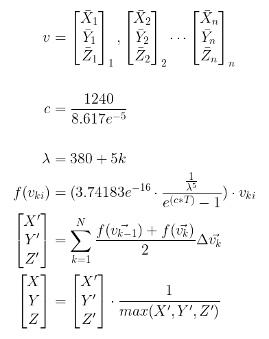C is the set of chromaticity coordinates for NTSC standard primaries. The associated coordinates given for white align with a D65 standard illuminant. [9] [10]

Compiling from Source
git clone https://github.com/reiniiriarios/chromaticity-color-utilities.git
cd chromaticity-color-utilities
npm install
tsc
References
- International Telecommunications Union. Recommendation ITU-R BT.2020-2. "Parameter values for ultra-high definition television systems for productionand international programme exchange". (2015) https://www.itu.int/dms_pubrec/itu-r/rec/bt/R-REC-BT.2020-2-201510-I!!PDF-E.pdf
- International Telecommunications Union. Recommendation ITU-R BT.709-6. "Parameter values for the HDTV standards for production and international programme exchange". (2015) https://www.itu.int/dms_pubrec/itu-r/rec/bt/R-REC-BT.709-6-201506-I!!PDF-E.pdf
- International Telecommunications Union. Recommendation ITU-R BT.601-7. "Studio encoding parameters of digital television for standard 4:3and wide-screen 16:9 aspect ratios". (2011) https://www.itu.int/dms_pubrec/itu-r/rec/bt/R-REC-BT.601-7-201103-I!!PDF-E.pdf
- International Commission on Illumination. CIE 15: Technical Report: Colorimetry, 3rd edition. (2004) https://archive.org/details/gov.law.cie.15.2004
- Bruce Lindbloom. "Computing RGB-to-XYZ and XYZ-to-RGB matrices". http://www.brucelindbloom.com
- Dan Bruton. "Approximate RGB values for Visible Wavelengths". (1996) http://www.physics.sfasu.edu/astro/color/spectra.html
- Darel Rex Finley. "HSP Color Model — Alternative to HSV (HSB) and HSL". (2006) https://alienryderflex.com/hsp.html
- Michael Stokes (Hewlett-Packard), Matthew Anderson (Microsoft), Srinivasan Chandrasekar (Microsoft), Ricardo Motta (Hewlett-Packard). "A Standard Default Color Space for the Internet - sRGB". (1996) https://www.w3.org/Graphics/Color/sRGB.html
- William T. Bridgman, NASA; Dan Bruton, SFASU. "RGB Values for Hot Objects". (2000) http://www.physics.sfasu.edu/astro/color/blackbodyc.txt
- C. A. Bouman. "Digital Image Processing". (2021) https://engineering.purdue.edu/~bouman/ece637/notes/pdf/ColorSpaces.pdf